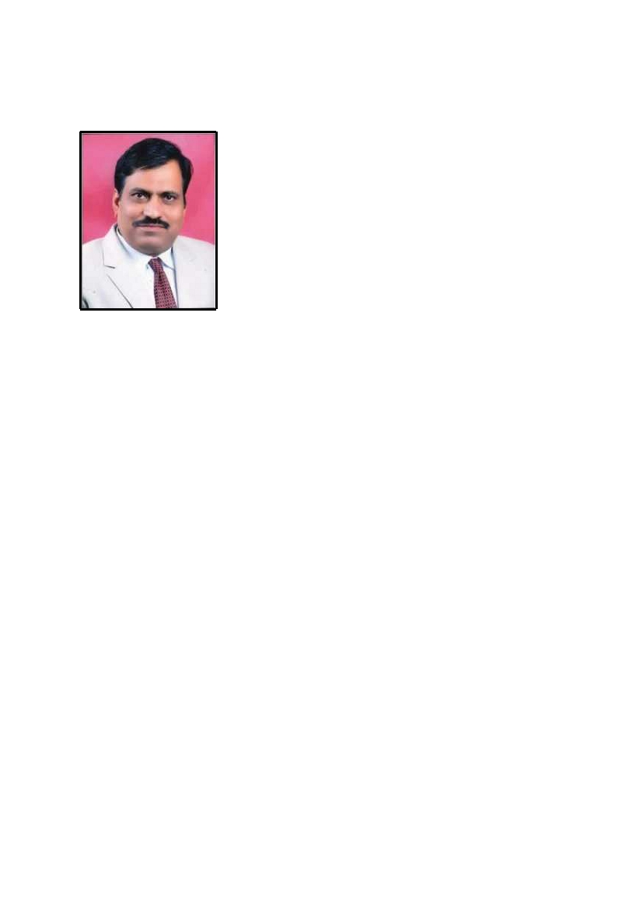

Dr. Kaluram G. Kanade, Ph.D, FMASc, FICS
Director, Moraya SciTech Lab & Pub, LLP
Profile
With nearly 35 years of experience in academia and research, dedicated the career to
advancing the fields of chemistry and nanotechnology. As a professor, teaching and
research have cantered on materials synthesis with a specific focus on the
groundbreaking developments in nanotechnology.
Throughout his career, he had the privilege of leading as a principal and director of
various institutes, where he combined my passion for education and research,
overseeing academic initiatives and fostering an environment of scientific inquiry. He
has successfully authored and secured numerous research grants and proposals,
driving innovation in areas such as nanomaterials and their applications. He has
expertise in materials characterisation by analytical technique as well as spectroscopic
techniques (UV-Vis, IR, Raman, PL, XRD, XPS, NMR, FESEM, TEM, etc.) His
experience in grant writing has enabled to build collaborative research partnerships
and advance cutting-edge projects that push the boundaries of innovation and
technology.
Committed to mentoring the next generation of scientists, innovator, and entrepreneur.
He actively engage in research collaborations, student mentorship, and curriculum
development, ensuring that both teaching and innovation thrive in my academic
practice.
Areas of Expertise
Research and development
Science education
Proposals and grant
Nanomaterial Synthesis
Nanotechnology

Notable Achievements
“Fellow of Science”, Indian Chemical Society (2022) and Maharashtra
Academy of Science (2019)
h-index: 17, i-10 index: 23, Citation: 1326
46 Research articles publication and 3 patents
NIRF Ranking as administrator to the Autonomous institute
Member, Managing Council, Rayant Shikshan Sanstha, Satara
Faculty Member, Board of Studies, Chemistry, Savitribai Phule Pune
University
“Commonwealth Fellowship 2011” Nominated to Academic staff
Commonwealth Fellowship, UK, 2011
“International Research Fellow award” for one year (2005) at KRICT,
Daejeon, South Korea.